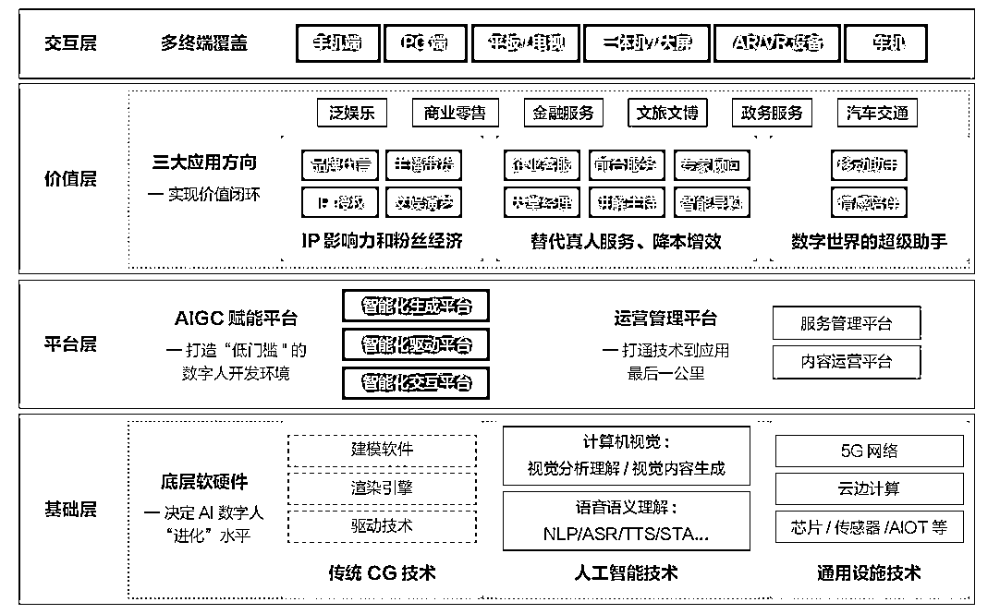
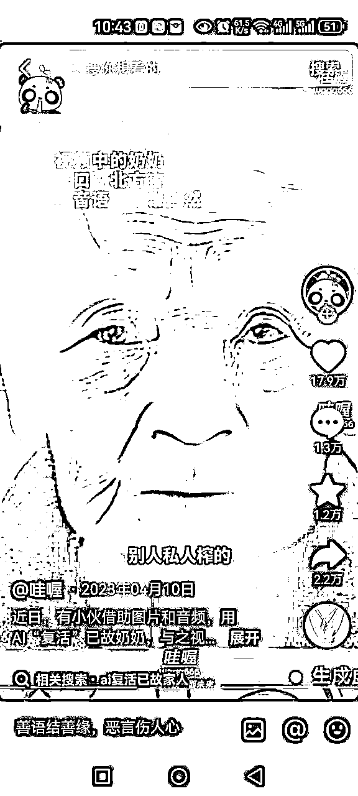
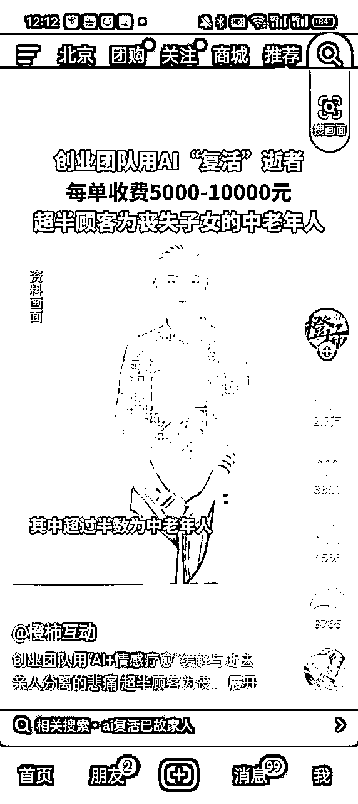
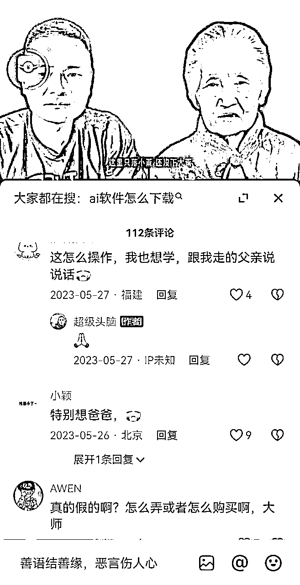
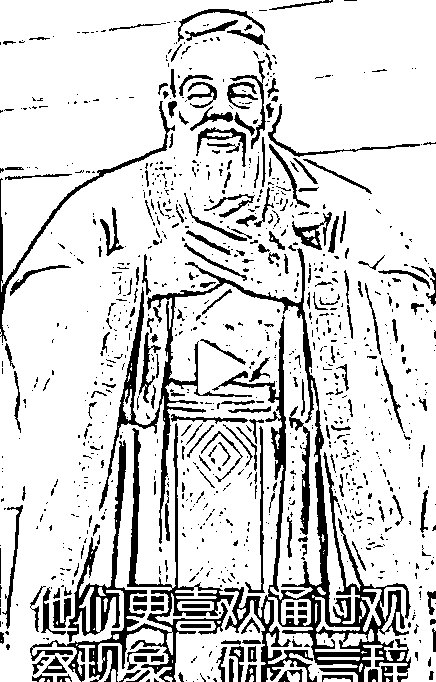
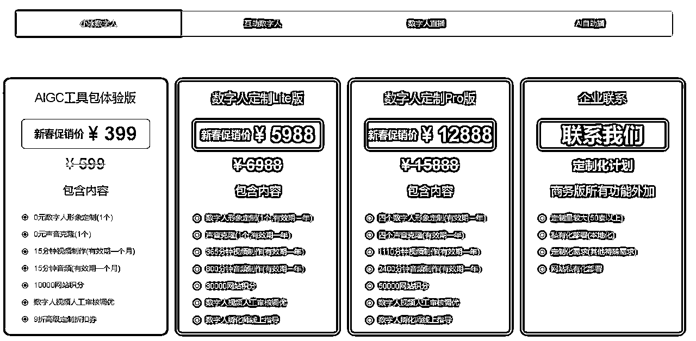
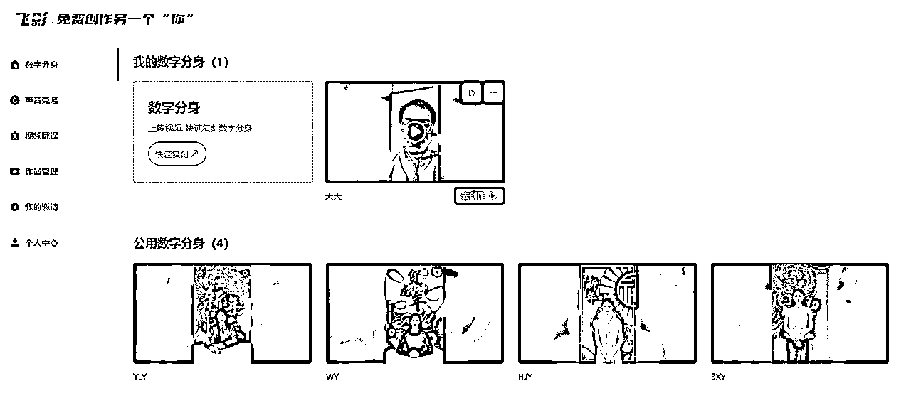

来源：https://zwk3hgyxx1b.feishu.cn/docx/VH9idnH9UoWAvZxY4aWcvGN2nKd
风向标拆解第 3 期--AI复活--小天
当时听了视频号可能在24年爆发，就选择了视频号方向，对这块也是完全陌生的领域。项目在选题时浪费了挺多时间，不知道选择哪个项目，经过这几天的摸索，感觉【AI复活】只算是一个小风口，它不是必需品，也有人评论不该有这个东西，让人一直沉迷在过去和悲伤中。而新的发现是数字人在2023年其实已经起飞，特别是央视等平台已经运用的如火纯青了，2024年它应该是电商行业的爆发期，无人直播+数字人实在太香了。
会“捉妖”的虚拟美妆达人柳夜熙，抖音出道三天点赞即超百万，一夜之间成为国内虚拟偶像界的“顶流”；
在江苏卫视跨年演唱会上，昔日歌后邓丽君“重返”舞台，与歌手周深同台对唱，交织几代人的青春记忆；
在《2023中国诗词大会》的现场降临了一位神秘嘉宾——“数字人苏轼先生”。在现场，数字人苏轼以“历史情景再现”的形式为选手出题，并和现场的主持人、选手进行了实时互动。
来自【商汤智能产业研究院】的AI 数字人产业生态“拼图”

对于大范围来讲，AI复活的对象非常广泛，最常见的有遗属与亲友、教学机构、科技爱好者，甚至一些娱乐产业，比如迈克杰克逊，如果克隆出一个数字人，那肯定也是非常受欢迎。个人浅薄认为在未来的养老行业，也是有它的存在空间，数字人陪伴，甚至疗养。
下面主要讲述目标人群的情况：
特征：希望重新感受亲人的"存在"，这个需求非常强烈，很多人有着过多的遗憾未了。
需求分析：这一群体对于身故亲友的怀念充满情感需要人，可能会通过与“复活”的亲人进行互动来寻找心理慰藉。

特征：对历史有浓厚兴趣，希望通过更加生动的方式学习历史。
需求分析：产品可以侧重于历史准确性和教育意义，应用场景包括博物馆展览、教育软件等。需要有线下资源，难度相对比较大。
特征：他们也看好这个项目，有或多或少的了解，他们真正的需求是学会制作AI数字人的技术。
需求分析：AI数字人大火，很多个体或机构想尝试制作数字人，对电商或一些短视频或媒体有非常大的帮助，他们会有投资学习，快速掌握这门技术以在自己的行业引流变现或节省人工成本。
对于经济一般的家庭，主要以老照片作为主要素材，来制作数字人，适用于体验式的软件平台；定价比较低，或者采用广告等其他模式进行创收；
以老照片、声音作为主要素材，来制作数字人，有专门的人员来对接。市面上定价一般在5000-20000元之间，根据具体要求、视频长短等进行定价；创作数字人也是需要成本的，每个数字人创作平台收费都有差异。

“AI复活”听起来很高大上，但实际做的不多，在23年4、5月份报道后基本没有太大的波动，多数是将它作为新闻在报导。
建议只做起步使用，去抖音等各平台搜索一样的话题，直接私聊转化。
最好能打通公众号，用户关注后，填写登记单。

直播主要做情感互动、复活人的案例展示等，不要直播现场操作，一个是为同行提供了经验，一个是破坏了它在普通人心中的那个高价值感与神秘感，有需求的还是需要引入私域进行成交。
如果自己对做短视频和直播不熟悉，选择投流也是很好的方式，高客单价的商品足以覆盖成本。
对历史人物进行“复活”口播而博取流量，进行广告或私域的转化。
以下是复活孔子的案例，让他口播一段文字，引起用户乐趣

通过公司运营，能够和客户签订合同，避免碰触法律红线。
（1）资料收集：获取逝者的图片、视频、文字记录以及声音样本。
（2）权限获取：确保已得到逝者家属或有权利人的同意，尊重用户及逝者的隐私权。
如果非亲属关系，可能拿它用于非法用途，客户提供的资料比较难判断是否属实，对象可能并不是已逝者。
前面已经讲过，他们真正的需求是学会制作AI数字人的技术，这个方向直接卖课就可以了。
以下只是部分平台简介，需要自己去深入学习
入门教程：https://mp.weixin.qq.com/s/3GevI8fC7eXf3mBYBq2R5A
注册链接：快来注册智影
国内的各大公司都有数字人产品，主要还是偏向播报型，我也没时间去一一实践操作，如果你发现好的平台，给我留言哦。
其他平台的可以看看【知乎文章】：AIGC背景下短视频创作者要了解的15个数字人工具
D-ID 是一家以色列 AI 创业公司的产品。该公司此前推出的“Deep Nostalgia”（将老照片中亲人的脸动画化）和“LiveStory”（在动画照片中添加音频，让照片中的人讲述自己的生活史）等项目曾在 Tiktok 等社交媒体上疯传。
D-ID 主打方向是 AI Avatar（数字人形象） 生成视频，比起 HeyGen、D- ID 提供了更多 credits（你能免费体验的时间更长）让用户试用。
官网地址：https://www.d-id.com/
HeyGen主打广告营销、企业培训、讲解、销售等多个需要人物形象出镜的内容。因为更面向 ToC 消费者，HeyGen能够体验到更多丰富的数字人功能。
官网地址：https://www.heygen.com/
Video-ReTalking 是一个利用AI实现视频人物嘴型与输入的声音同步的创新技术。简单来说，就是输入任意一个视频和一个音频文件，在生成的新视频中，人物的嘴型会与音频同步。
它不仅可以让嘴型与声音同步，还可以根据声音改变视频中人物的表情。
https://github.com/OpenTalker/video-retalking
地址：https://aifeng.iiii.com/

地址：https://flyworks.ai/setting?code=K9zsWxJhSTq

参考文档
风向标拆解5组-中老年人知识付费
8组 中老年知识付费
深度复盘：如何打造一个盈利的中老年知识付费公司（国学类）
欢迎圈友们链接哈！